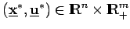
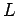
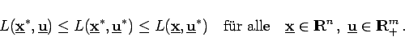

Inhalt Index DeskTop Bronstein

 Optimierung Nichtlineare Optimierung Problemstellung und theoretische Grundlagen Optimalitätsbedingungen
Optimierung Nichtlineare Optimierung Problemstellung und theoretische Grundlagen Optimalitätsbedingungen


Unter der Annahme von Zusatzvoraussetzungen soll die Optimalitätsbedingung (18.36a,b) auf eine für die praktische Anwendung geeignete Form gebracht werden. Dazu wird entsprechend der LAGRANGEschen Multiplikatorenmethode zur Ermittlung der Extremwerte von Funktionen unter Gleichheitsnebenbedingungen die LAGRANGE-Funktion gebildet:
Ein Punkt  heißt Sattelpunkt von , wenn gilt
|  | (18.38) |